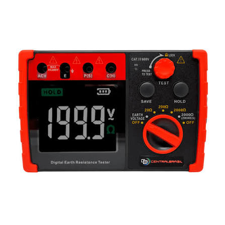

Alicate crimpador MC4
Ponto Positivo: Garante conexão perfeita e segura nos conectores solares, evitando maus contatos e perda de carga.
Ponto Negativo: É uma ferramenta muito específica e tem pouca utilidade fora de instalações fotovoltaicas.

Alicate decapador de fios
Ponto Positivo: Agiliza o trabalho e descasca o fio com precisão sem cortar ou danificar os filamentos de cobre.
Ponto Negativo: O mecanismo de regulagem de pressão pode desgastar com o tempo ou desajustar em cabos muito grossos.

Alicate prensa terminal
Ponto Positivo: Aplica a força necessária com facilidade para fixar terminais tubulares e olhais de alta bitola.
Ponto Negativo: Exige bastante força manual em modelos sem catraca ou com empunhadura pequena.
.webp)
Chave dinamométrica (torquímetro)
Ponto Positivo: Evita o espanamento de parafusos e garante o aperto exato exigido pelos fabricantes dos painéis.
Ponto Negativo: Requer calibração periódica constante para não perder a precisão da medição de torque.

Chave especial para conectores MC4
Ponto Positivo: Muito leve e barata, facilita o aperto manual e o travamento do prensa-cabo sem quebrar o conector.
Ponto Negativo: Por ser geralmente feita de plástico, pode espanar as travas se utilizada com força excessiva.

Chaves Allen e Torx
Ponto Positivo: Oferecem excelente encaixe e transferência de torque para montar os suportes e trilhos solares.
Ponto Negativo: Peças avulsas menores são facilmente perdidas em instalações em telhados ou locais altos.
.webp)
Chaves fixas e de boca (jogo de chaves)
Ponto Positivo: Ferramentas extremamente duráveis e versáteis para apertar porcas e parafusos de fixação.
Ponto Negativo: O jogo completo adiciona um peso considerável à mala ou cinto de ferramentas da equipe.
.jpg)
Medidor de irradiação solar (piranômetro)
Ponto Positivo: Fornece dados precisos da radiação solar para validar a eficiência real da usina fotovoltaica.
Ponto Negativo: É um equipamento de custo elevado e exige limpeza constante na cúpula para evitar erros de leitura.

Multímetro e alicate amperímetro
Ponto Positivo: Permite medir a corrente sem precisar seccionar ou interromper o circuito elétrico ligado.
Ponto Negativo: Medições de corrente contínua (CC) exigem modelos específicos e mais caros que os de corrente alternada (CA).

Nível de bolha ou nível a laser
Ponto Positivo: Assegura um alinhamento estético e estrutural perfeito dos painéis no telhado ou solo.
Ponto Negativo: Níveis a laser perdem muito a visibilidade da linha quando expostos diretamente à luz solar forte.

Parafusadeira e furadeira
Ponto Positivo: Aumenta drasticamente a produtividade e reduz o esforço físico nas perfurações e apertos.
Ponto Negativo: Depende do carregamento constante de baterias sobressalentes para não parar o trabalho no meio do dia.

Serra tico-tico ou esmerilhadeira
Ponto Positivo: Corta perfis de alumínio e estruturas de aço com rapidez e facilidade no local da obra.
Ponto Negativo: Gera faíscas e resíduos, exigindo uso rigoroso de EPIs e alto cuidado em telhados inflamáveis.

Trena
Ponto Positivo: Essencial e indispensável para o dimensionamento correto da área do telhado e espaçamento.
Ponto Negativo: Trenas de fita metálica dobram com facilidade ao tentar medir distâncias longas sem apoio.

/Brocas para alvenaria, madeira e metal
Ponto Positivo: Permite perfurar os mais variados tipos de superfícies e estruturas de fixação.
Ponto Negativo: Perdem a afiação rapidamente se utilizadas na velocidade incorreta ou sem lubrificação em metais duros

Terrômetro
Ponto Positivo: Garante que o sistema de aterramento esteja dentro da norma técnica, protegendo o sistema contra surtos.
Ponto Negativo: Modelos tradicionais exigem o cravamento de hastes auxiliares no solo, o que é difícil em locais pavimentados.